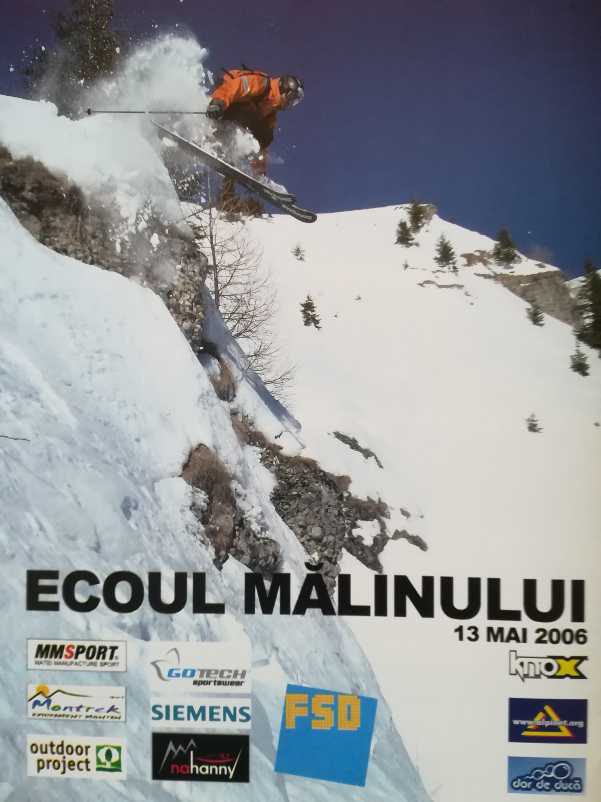
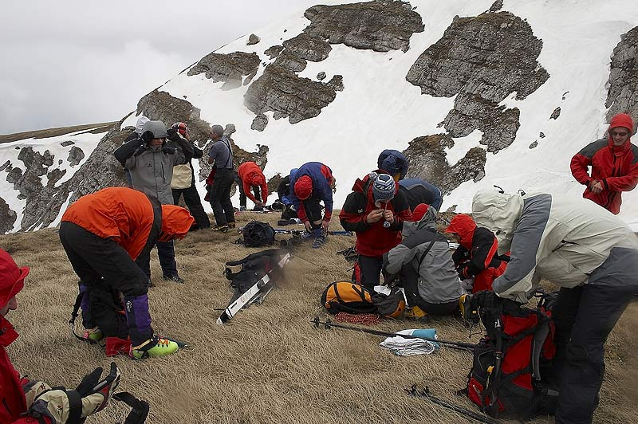
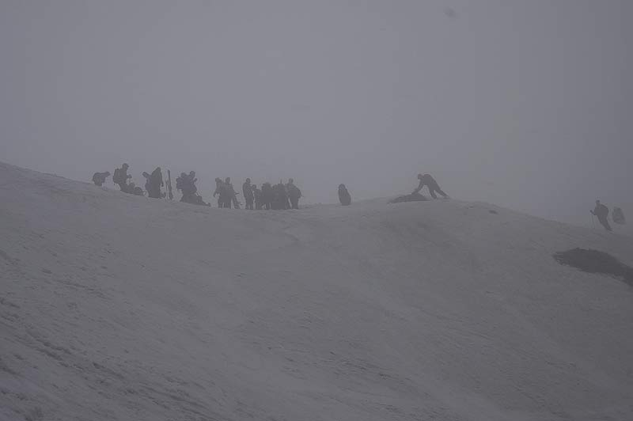
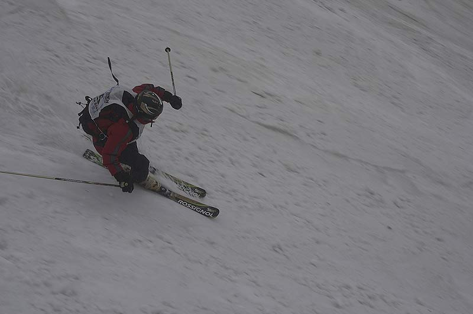
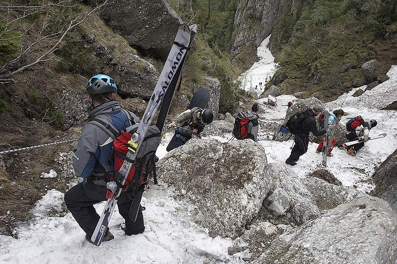
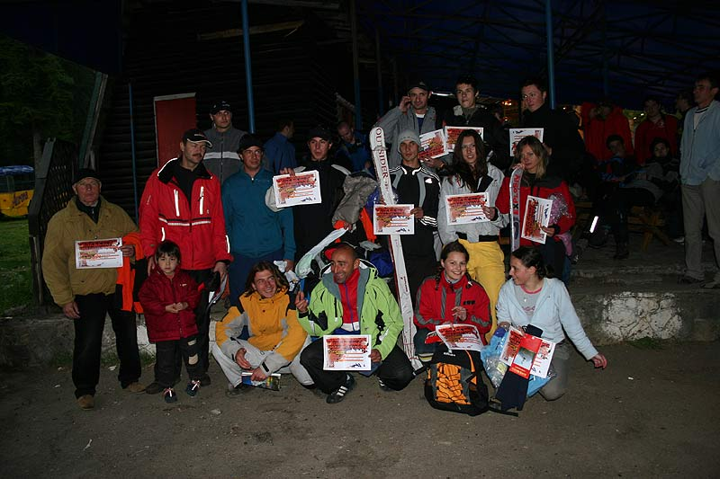

Cupa Malinului 2006
 Cum sloganul cu ziua buna nu mai e valabil de mult, nu ne-am mirat cind, dupa soare si ceva nori de dimineata, pe la ora 9.30, cind urcam cu telecabina spre Babele, a inceput sa ploua marunt. Si ca sa fie meniul complet, vintul a inceput sa sufle ca nebunul. Dar nu conta, eram pregatiti, nimic nu ne putea sta in cale, concursul trebuia sa inceapa, concurentii erau pe drum. A fost cea mai "dura" editie: viscol, ninsoare, lapovita, foarte frig, vint de te lua pe sus si, cel mai rau, ceata. A fost o provocare sa montam bannerele sponsorilor pe asa vijelie.  Am avut ceva emotii ca, speriati de vreme, concurentii vor renunta sa urce, sau cabina se va opri, dar cind numerele de concurs au ajuns pe la 20 m-am linistit-genul de schiori care vin la concursul nostru nu se sperie de vreme urita. Vintul, ploaia si ninsoarea au pus la grea incercare si arbitrii, cei de sus riscind sa le fie zburate foile de arbitraj din mina, cei de jos confruntindu-se cu ploaia torentiala care le-a transformat foile de arbitraj in ceva pe care era imposibil sa scrii. Dar cel mai cumplit adversar a fost ceata. S-a dat startul in jurul orei 12, cind speranta ca ceata ar putea sa se ridice s-a spulberat. Ca sa compenseze vitregiile vremii, zapada a fost nemaipomenit de buna, de ea profitind primii inscrisi in concurs. Au fost mai multe variante de intrare pe vale, iar sosirea a fost stabilita la intersectia cu Valea Scorusului, inainte de ultimul canion. Au fost in total 47 de concurenti: 25 schi baieti (din care 3 din strainatate), 7 schi fete, 14 snowboard baieti si 1 snowboard fete. Inca vreo 30, care, ca sa scape de frigul si viscolul de sus, nu s-au mai inscris in concurs ca sa plece mai repede pe vale.  Dupa participarea foarte numeroasa de anul trecut (70 concurenti + 30 in afara concursului), cind am ramas fara numere de concurs si a trebuit sa improvizam in hazul general, anul acesta am avut peste 100 de numere, confectionate de unul dintre sponsori, firma Gotech.  Ultimii sositi, dupa ora 14.30, nu au mai putut fi inscrisi in concurs. Ultimul concurent, Vlad Metaxa, a avut o evolutie foarte buna, iesind pe locul 5. Spre sfirsitul concursului ceata s-a spulberat si a iesit si soarele, dar prea tirziu, ratasem sa vedem cele mai spectaculoase sarituri. Au fost si mici "accidente": cazaturi pe zona de concurs, in rimaye, dar din fericire fara urmari grave. Echipa Salvamont Busteni, cu trusa medicala pregatita, a acordat primul ajutor.  Corzile fixe, montate de acestia la partea de jos a vaii si pe Hornul Pamintos au ajutat ca retragerea schiorilor de pe vale sa se faca in conditii de siguranta. Concursul a fost asistat si de o echipa a Jandarmeriei Montane Busteni si Sinaia. Ploaia ne-a incurcat si festivitatea de premiere, dar nimeni nu s-a plins. Concurentii au asteptat cu emotie clasamentele care i-au desemnat pe cei mai tehnici si rapizi schiori si snowboarderi.  Organizator Alpin Club Ecoul Bucuresti & CoProd CND (TeamXpert Sports Events) Sursa: Alpinet.org
CUPA MALINULUI este prima si cea mai longeviva competitie de schi & snowboard Freeride din Romania. Competitia s-a desfasurat fara intrerupere din 1998 pana in 2014. | Despre Noi | Programe Ski | Alte competitii | Media | Corporate | Contact | |

Powered by RaduSavin.ro & TeamXpert. Copyright © MMX - MMXIV. All rights reserved.